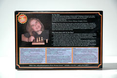
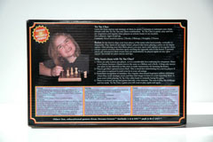
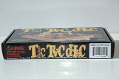
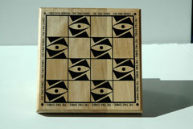

|
 |
History
Tic Tac Chec was created by Dream Green.
Game Play
The Pieces:
Chess Pieces: Pawn, knight, bishop and rook.
Rules:
To move: Pawn: A pawn may move one space forward, except when it captures a piece it may move diagonally one space forward.
Knight: A knight moves one space forward or backward and then two space left or right or it moves two spaces backward or forwards and one space
left or right.
Bishop: The bishop may move diagonally in any direction in any number of spaces.
Rook: The rook moves vertically or horizontally any number of spaces as long as long as it does not have to jump
over another piece.
To win: Get four of your pieces in a line before your opponent.
Players alternate turns placing a piece on the board or moving one of his already placed pieces. Players may only move their pieces once they have placed at least 3 of their 4 pieces on the board. Pieces move as in normal chess, and capture according to normal chess rules. Captured pieces are returned to the opponent's pool of pieces.
Pictures:
|
|
 |
|  |  |
 |
GamesCrafters:
Reman Child
References:
Green, Don. Tic Tac Chec. Dream Green Instructions. 1998.